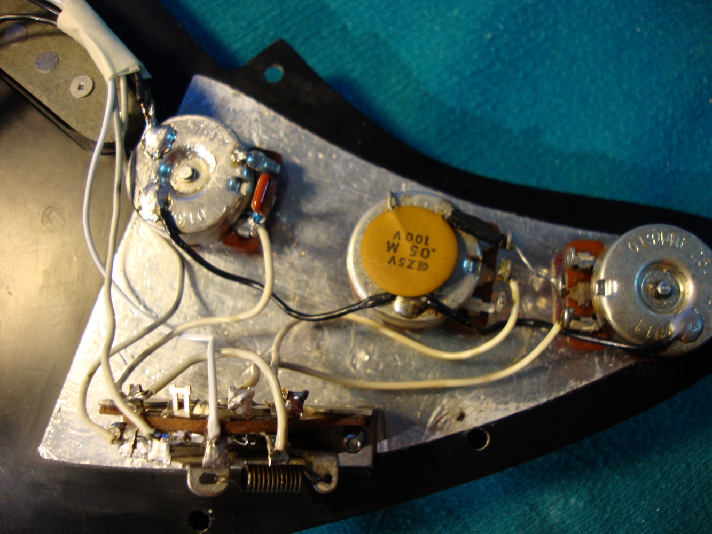

Os potenciômetros, ou knobs, servem para controlar os sinais da guitarra. Um deles controla a intensidade do sinal, ou o volume geral dela. Os outros dois controlam a quantidade de agudos no timbre, um deles para o captador do braço e o outro para o captador da ponte.